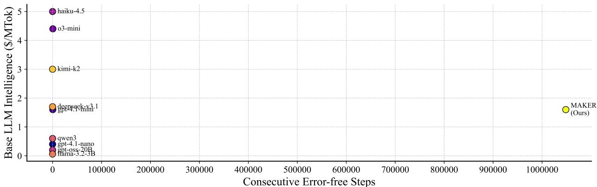
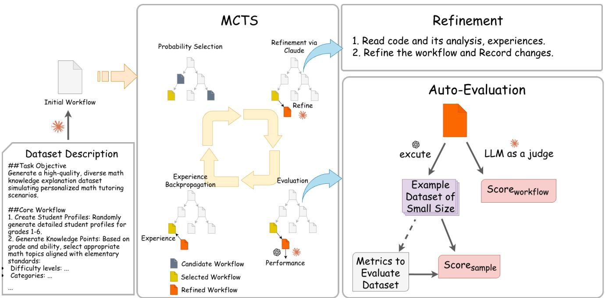
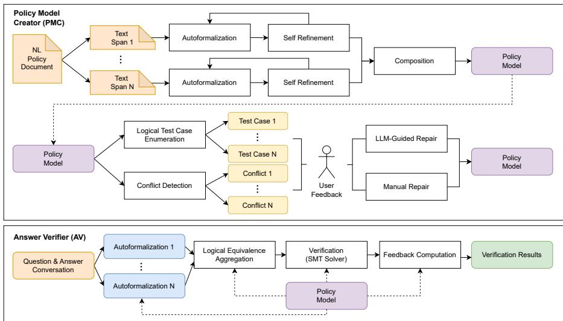
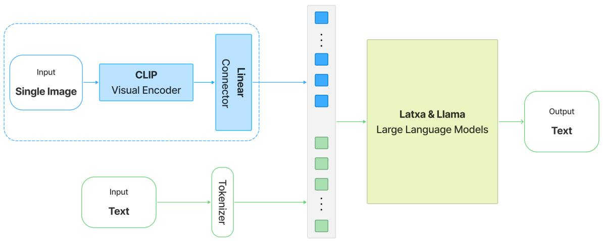

📝 微观深度解读
2025-11-13
为您精选了 6 篇高质量 AI 论文的深度解读
MAKER框架
任务分解
多代理投票机制
大型语言模型
高精度应用
推荐分数: 0.544
📖 简介：本文提出了MAKER框架，通过极端任务分解和多代理投票机制，成功解决了大型语言模型在执行复杂长时程任务时的高错误率问题。该方法实现了在超过一百万个步骤的任务中零错误执行，展示了显著的可扩展性和可靠性，为高精度领域的应用提供了新的解决方案。

查看详细解读 →
合成训练数据生成
AutoSynth框架
无参考数据
混合奖励信号
自动化内容生成
推荐分数: 0.483
📖 简介：本文提出了AutoSynth框架，旨在解决缺乏标注数据集时的合成训练数据生成问题。通过将数据生成重构为工作流搜索问题，并引入无参考数据的混合奖励信号，AutoSynth显著提升了生成数据的质量和效率，减少了90%以上的人力投入，推动了主观任务领域的自动化内容生成。

查看详细解读 →
路由框架
软件相关任务
可解释性
黑箱路由
诊断能力
推荐分数: 0.479
📖 简介：本文提出了Routesplain，一个专为软件相关任务设计的LLM路由框架。它通过提取人类可解释的概念（如任务类型和复杂度）来优化用户查询的路由，提升了响应的准确性和成本效益。实验结果显示，Routesplain在多个软件任务上超越了现有黑箱路由方法，提供了更高的可解释性和诊断能力。

多轮强化学习
大型语言模型
动态适应性
教学策略
双目标奖励机制
推荐分数: 0.476
📖 简介：本文提出了单向认知优化（UCO）框架，旨在解决大型语言模型在教育中缺乏动态适应性的挑战。UCO通过多轮强化学习和创新的双目标奖励机制（进展奖励和支架奖励），有效评估学生认知进步并动态调整教学策略。实验结果显示，UCO在教学效果、质量和避免答案泄露方面均优于现有模型，展现出卓越的性能和实用性。

神经符号框架
自然语言形式化
逻辑一致性验证
冗余翻译
假阳性率
推荐分数: 0.475
📖 简介：本文提出了一种名为AUTOMATED REASONING CHECKS (ARC)的神经符号框架，旨在解决大型语言模型在金融和医疗等受监管行业中的应用限制。该框架通过两阶段方法：首先将自然语言政策形式化，其次通过冗余翻译和符号推理验证逻辑一致性，实现超过99%的声望，显著降低假阳性率，确保输出的准确性和合规性。

查看详细解读 →
多模态大语言模型
低资源语言
巴斯克语
数据混合策略
晚融合架构
推荐分数: 0.448
📖 简介：本文提出了一种针对低资源语言巴斯克语的多模态大语言模型（MLLM）开发方法。通过创建首个巴斯克语多模态数据集，并采用晚融合架构与数据混合策略，研究表明仅需20%的巴斯克数据即可实现优异性能，且无需特定的巴斯克基础模型。这一方法为其他低资源语言的MLLM开发提供了重要参考。

查看详细解读 →